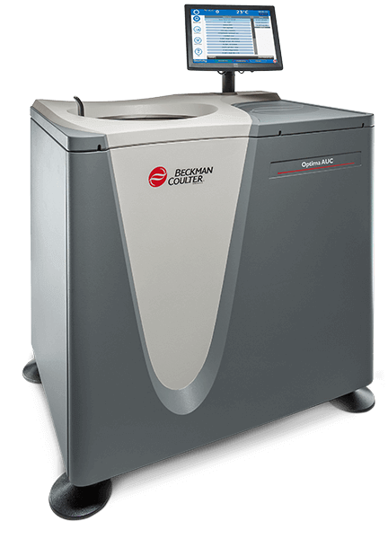
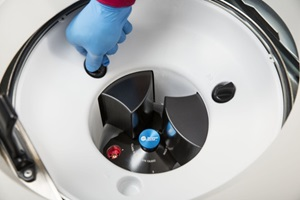

MS: ✓
BD: ✗
The Analytical Ultracentrifuge
History of AUC Instrumentation
High speed centrifugation was first developed one hundred years ago, in the 1920's, while the knowledge of centrifugation has been around for centuries.
It was in Uppsala, Sweden, where Theodore "The" Svedberg build the first ultracentrifuge with his co-workers in 1924. This instrument utalized a hydrogen atmosphere and sector shaped cells. Svedberg was initialy interested in gold particle size distributions, but was redirected to performing sedimentation equilibiurm expreriments to study the tertiary and quaternary structures of proteins.
The first sedimentation velocity experiment verified a hemo-globin mass, which was identical to the 68,000 g/mol that was measured by the equilibirum experiment, and confimed the presence of a single diffusion component.
In the 1940's, Edward Pickel developed an ultracentrifuge that would perform under vacuum, greatly reducing heat from any frictional interactions. Edward Pickel also started SPINCO (Specialized Instruments Company), which was later aquired by Beckman (now Beckman-Coulter). The Model E also allowed for the development of the Rayleigh interferometric optical system(Richards & Schachman, 1959), and the photoelectric scanning abosrbnce optical system (Hanlon et al. 1962). The short column technique for sedimentation equilibirum (Van Holde 1958; Yphantis, 1960) and density gradient equilibiurm experiments (Meselon, et al. 1957) were developed in parallel.
AUC was left behind as newer and faster analytical methods were developed, but when Beckman introdued the XL-A instrument in 1992, its use increased. This newer AUC produced digital absorbance data, were smaller, and overall more easily maintained and serviced. Today, AUC is a powerful technique in biophysics for several reasons:
-
AUC has unmatched resolution due to hydrodynamic seperations of all molecules based on their size, density, and anisotropy.
-
AUC does not require any standards, as it is a first principle technique, and a partial differential equation (the Lamm Equation) can exactly describe the flow of solution within an AUC cell.
-
AUC has a large dynamic range, with variable rotor speed, allowing for variable buffer densities and viscocities, with high sensitivity from picomolar to high micromolar concentrations.
-
AUC has multiple optical systems which can provide orthogonal measurements.
Beckman Coulter Optima AUC
Beckman Coulter Optima AUC

-
10 micron radial resolution
-
0.5 nm wavelength resolution
-
Network interface
-
Multi-wavelength capable
-
Built-in database for data aquisition
The Optima AUC was released by Beckman Coulter in 2016. The Optima AUC is the next-generation analytical ultacentrifuge built upon the previous old standard ProteomeLab. Designed for optimal user convenience and higher-quality data, the Optima AUC includes a host of new features to offer the best expereice for both new and existing AUC users. These enhanced features enable shorter experiments with increased resolution and consistency to yeild better data with greater efficieny. The advantages of the Optima AUC were listed as: convenient operation & control, increased data quality & resolution, and time-saving features that improve efficieny.
Instrument Components

Chamber The rotor chamber is made of aluminium, coated with a chemical-resistant expoxy finish. Along with the rotor drive spindle, several sensors and ccontrol systems are contained within the chamber.
Vacuum System The vacuum system consists of a diffusion pump in series with a mechanical vacuum pump. The system starts automatically when a run is stated, or manually with "Vacuum" on the touch screen. When the vacuum system is on, the chamber pressure will be displayed in microns. To vent the vacuum after a run is finised, select the "Vent Vacuum" button on the display screen. After the door is opened, you will have a 5-minute window to switch out the rotors/cells wherein the chamber temperature remains as set. After this time period, the chamber will return to the approximate room temperaure to minimize any condensation collection within the chamber.
Temperature Sensing and ControlThe temperature within the rotor chamber is measured by a solid state thermophile located in the bottom of the chamber. The Optima uses a solid state thermoelectric refrigderation and heating system, and cooling is provided by forced air from fans. Temperture control occurs when the door is closed and the vacuum system is running.
Door The door is made of high-strength structural steel with a solenoid interlock to prevent contact with a spinning rotor. The door locks automatically when it is closed and a run has begun. It can only be opened when the rotor is at rest with the chamber at atmospheric pressure.
Barrier Ring A 41-mm (1.63-in.) steel alloy armor ring acts as the primary barrier, surrounded by a 13-mm (0.5-in.) vacuum chamber to provide full protection for the operator.
Imbalance detector The imbalance detector will force an automatic shutdown is the rotor loads are severely out of balanced.
Overspeed Disk See Rotors: Rotor Safety.